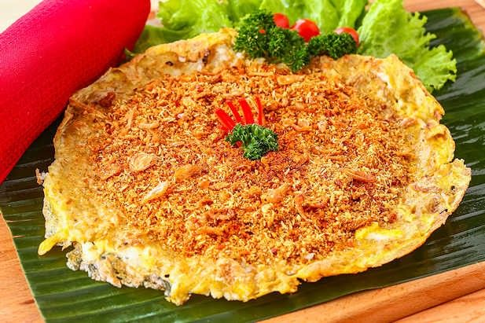

Mengenal Kerak Telor
Kerak telor adalah jajanan khas Betawi yang dimasak di atas bara api. Teksturnya gurih dan sedikit renyah di bagian bawah.

Bahan Utama
- Beras ketan putih
- Telur ayam atau telur bebek
- Ebi (udang kering)
- Serundeng kelapa
- Bawang goreng
Cara Menikmati
- Cari pedagang kerak telor yang sedang memasak.
- Pilih telur ayam atau telur bebek.
- Tunggu sampai matang di atas bara.
- Taburi serundeng dan bawang goreng.
- Nikmati selagi hangat.